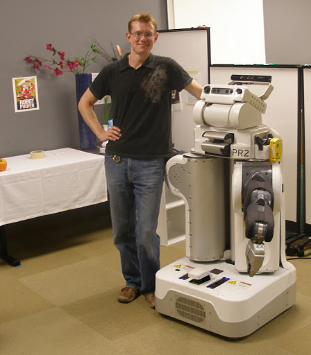

Ken Anderson
I am a software engineer in Ottawa, Canada. My interests include robotics, artificial intelligence, data fusion, and video processing. I have worked on a variety of projects over the years in academia and industry. You can find out more information about my projects and experience in the following pages.
